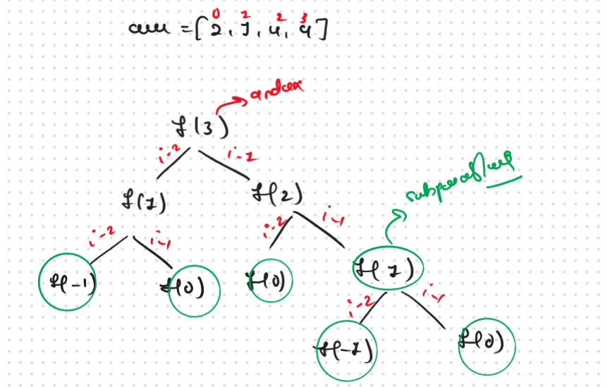
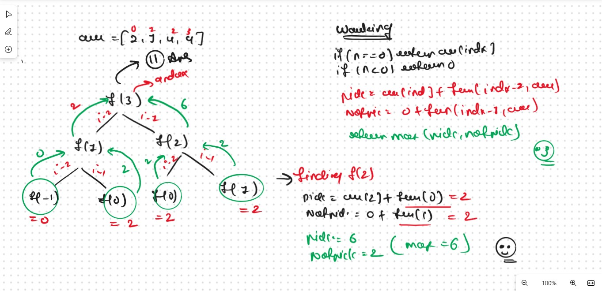
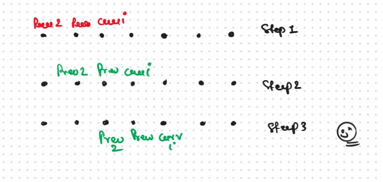

JB TAK FODEGA NHI .... TB TK CHODEGA NHI .... (MAANG)


DPL5 Maximum Sum of Non-Adjacent Elements or House Robber 1-D
Given an array of ‘N’ positive integers, we need to return the maximum sum of the subsequence such that no two elements of the subsequence are adjacent elements in the array.
Note: A subsequence of an array is a list with elements of the array where some elements are deleted ( or not deleted at all) and the elements should be in the same order in the subsequence as in the array.
Now the first Things Comes in my mind is How can i find the all the Possible Subsecquance, Now her the Comes the Concepy of the Pick and Not Pick that we learned in the Recursion Playlist.
Recursice Approch
Steps to form the recursive solutionStep 1: Form the function in terms of indexes:
Step 2: Try all the choices to reach the goal.
Now here we used the Concept of the pick/non-pick technique to generate all subsequences. We also need to take care of the non-adjacent elements in this step.
.jpg)
Step 3: Take the maximum of all the choices
.jpg)
Recursion Base Conditions
The base conditions for the recursive Solution
.jpg)
.png)
.png)
Sb Mai He Kru ...
Khud Bhi Kr le Khuch ..... Nalayk
Time & Space Complexity
Time Complexity: O(2 ^ N)Reason: Exponential Time we find out the all the Possible Path
Space Complexity: O(N)
Reason: We are using a recursion stack space(O(N))
Memoization Approch
If we observe in the recursion tree, we will observe a many number of overlapping subproblems. Therefore the recursive solution can be memoized for to reduce the time complexity.
Now gere we see How Rewcursion Work Internally.
 Steps to convert Recursive code to memoization solution:.png)
.png)
Sb Mai He Kru ...
Khud Bhi Kr le Khuch ..... Nalayk
Time & Space Complexity
Time Complexity: O(N)Reason: The overlapping subproblems will return the answer in constant time O(1). Therefore the total number of new subproblems we solve is ‘n’. Hence total time complexity is O(N)..
Space Complexity: O(N)
Reason: We are using a recursion stack space(O(N)) and an array (again O(N)). Therefore total space complexity will be O(N) + O(N) ≈ O(N)
Tabulation Approch
Tabulation is a ‘bottom-up’ approach where we start from the base case and reach the final answer that we want and Memoization is the Top-down Approch.Steps to convert Recursive Solution to Tabulation one.
.png)
.png)
Sb Mai He Kru ...
Khud Bhi Kr le Khuch ..... Nalayk
Time & Space Complexity
Time Complexity: O(N*K)Reason: We are running two nested loops, where outer loops run from 1 to n-1 and the inner loop runs from 1 to K
Space Complexity: O(N)
Reason: We are using an external array of size ‘n’.
Space Optimization
If we closelly Observed if any Tabulation Approch we used the Some Limited Stuff like: ( i,i-1,i-2) for the finding the our ans then definetly here Spaced Optimization is Possible in that types of Problems. Always Remember

.png)
.png)
Sb Mai He Kru ...
Khud Bhi Kr le Khuch ..... Nalayk
Time & Space Complexity
Time Complexity: O(N)Reason: We are running a simple iterative loop
Space Complexity: O(1)
Reason: We are not using any extra space.